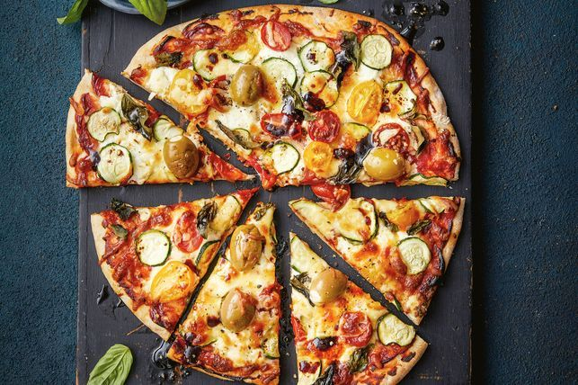

17-minute zucchini and ricotta pizza
Ingredients
- 450g pkt stone-baked pizza bases
- 90g (1/3 cup) tomato paste
- 155g (11/2 cups) pre-grated pizza cheese
- 150g fresh ricotta, crumbled
- 1/2 tsp dried chilli flakes (optional)
- 1 zucchini, thinly sliced with a mandolin
- 200g pkt tomato medley, halved
- 135g (3/4 cup) stuffed green olives
- 1/3 cup fresh basil leaves
- Extra virgin olive oil, to drizzle
- Balsamic glaze, to drizzle
2 Method Steps
Step 1
Preheat oven to 240C/220C fan forced. Spread the pizza bases with tomato paste .
Step 2
Sprinkle with half the pizza cheese . Top with the ricotta and chilli flakes, if using. Arrange the zucchini , tomato , stuffed olives and basil on top. Sprinkle with the remaining pizza cheese then spray with olive oil . Season. Bake directly on the oven racks for 10 minutes or until cheese is dark golden and base is crisp. Drizzle over oil and balsamic glaze , if using.